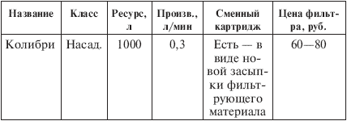
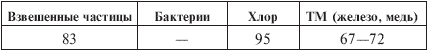
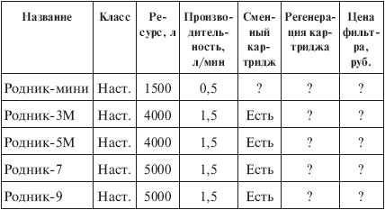
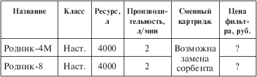
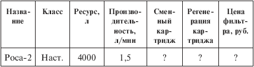
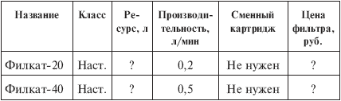
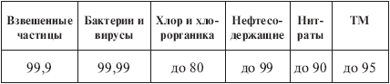
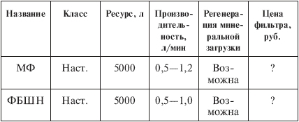
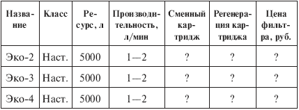
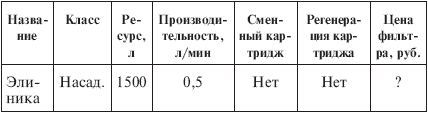

Бытовые фильтры. для очистки воды - фильтры разные .

Ниже дана краткая информация о ряде отечественных фильтров. Фильтры перечислены в алфавитном порядке.
«Колибри»(табл. 5.11 и 5.12) – насадка на кран, созданная Центром сорбционных технологий МАПО (Санкт-Петербург) и новгородской фирмой «Новокон». Сорбционный фильтр с активированным углем.
Таблица 5.11. Фильтр «Колибри»

Примечание. Информации о цене у меня нет, но надо полагать, что этот фильтр не дороже других насадок, т. е. стоит 60—100 руб.
Таблица 5.12. Эффективность очистки, %

Примечание. Дезинфекцию воды не обеспечивает.
Магические фильтры. Таковых несколько, но я не знаю, кто их производит, – возможно, отдельные предприимчивые граждане.
Даю описание такого фильтра со слов сотрудника одной из водоочистительных компаний. Этот человек посетил в Москве выставку, где экспонировалось устройство в виде пластинки, на которую нужно было поместить емкость с любой жидкостью, после чего она очищалась от всех вредных примесей в течение минуты.
Девушка, рекламирующая это устройство, объясняла, что тут работает секретная военная технология – торсионные поля или что-то в этом роде.
Мой информатор наблюдал, как был «очищен» стакан воды, а затем девушка извлекла запечатанную бутылку водки «Флагман», тоже «очистила» ее и заявила, что теперь получился напиток невероятно высокого качества. «Куда же исчезли сивушные масла и ароматизаторы?» – поинтересовался мой информатор и получил ответ: «Всосались в стекло бутылки».
На выставке это магической устройство предлагалось за 99 долл., а в иных местах, как мне рассказывали, цена доходит до 200 долл. В общем, страсть к оккультным наукам обходится недешево.
«Родник»(табл. 5.13) – сорбционный фильтр с активированным углем, выпускаемый АО «Сорбент» (Пермь). В сорбент добавлено серебро. Фильтры настольные или настенные и отличаются друг от друга в основном габаритами.
Таблица 5.13. Фильтр «Родник» АО «Сорбент»

Примечание. Данные об эффективности и цене у меня отсутствуют.
«Родник» (табл. 5.14) – сорбционный фильтр с активированным углем, выпускаемый ПО «Заря» (Нижегородская область).
Таблица 5.14. Фильтр «Родник» ПО «Заря»

Примечание. Данные об эффективности и цене у меня отсутствуют.
«Роса» – фильтров с таким названием несколько, оно столь же популярно для водоочистительных приборов, как «Родник» или «Аква». В конце 80-х годов я долго пользовался фильтром «Роса», который состоял из двух пластмассовых емкостей, соединенных сверху неким подобием дуги и загруженных минеральным сорбентом, шунгитом и цеолитом. Весил он около 5 кг и был неудобен в эксплуатации: его приходилось цеплять дугой за кран, и фильтр сваливался то на одну, то на другую сторону. Сейчас существуют новые шунгитные фильтры, а прежней «Росы», кажется, нет. Но фильтр с таким названием (табл. 5.15) производит упомянутое выше ПО «Заря» (Нижегородская область). В нем используются ионообменный материал и посеребренный активированный уголь.
Таблица 5.15. Фильтр «Роса» ПО «Заря»

Примечание. Данные об эффективности и цене у меня отсутствуют.
Еще об одной «Росе» я узнал из Интернета. Производитель неизвестен (дается только ссылка на банк «Северная казна», Челябинск). Технических характеристик тоже нет. Перечислены названия фильтров: «Роса-Супер 3000», «Роса-Супер 500», «Роса-Супер 200», «Роса-Супер 100», «Роса-1», «Роса-УФ». Также указано, что в них реализована многоэтапная очистка: предварительная механическая, затем сорбционная активированным углем, затем новым оригинальным сорбентом «фежел», затем доочистка волокнистым фильтром. Для обеззараживания используется серебро и ультрафиолетовый облучатель.
«Филкат» (табл. 5.16 и 5.17) – новая и очень интересная разработка компании «Адекватные технологии» (Москва). Это мембранный керамический фильтр с порами 0,2 мкм, который очень долговечен (насколько долговечен, в рекламном проспекте не сообщается) и существует в трех модификациях: бытовые «Филкат-20» и «Филкат-40» (видимо, настольные – высота 28 и 40 см) и фильтр большой производительности «Филкат-92-Модуль» (видимо, напольный или магистральный – высота около метра). По заявлению производителей, фильтрующий элемент «Филката» прекрасно обеззараживает и очищает воду от загрязнений, не извлекает из нее полезные соли и не требует замены.
Что тут еще сказать? Великолепно! Куплю, проверю.
Таблица 5.16. Фильтры «Филкат»

Примечание. В рекламном проспекте, который имеется в моем распоряжении, ресурс не указан. Стоимость фильтров в настоящий момент пересматривается.
Таблица 5.17. Эффективность очистки воды, %

Шунгитныебытовые фильтры (табл. 5.18) производятся ООО «Минеральная продукция» и ООО «Фильтры ММ» (Санкт-Петербург). Данные о них я получил из книги [12]. Для краткости обозначаю их так: МФ – минеральный фильтр в полиэтиленовом корпусе, ФБШН – фильтр бытовой шунгитный настольный в металлическом корпусе.
В этих фильтрах используются природные сорбенты шунгит и цеолит. Хотя я уже высказывал свои сомнения насчет способности таких фильтров чистить воду, это вовсе не закрывает вопрос о свойствах шунгита и цеолита.
Природные сорбирующие материалы (даже песок), безусловно, очищают воду, когда их масса велика (десятки-сотни килограмм) и вода находится в длительном соприкосновении с ними.
Что касается свойств шунгита, то на эту тему имеются серьезные научные статьи (см., например, [6]).
Я сомневаюсь лишь в том, что воду из крана, при весьма быстром ее течении, можно довести до питьевой кондиции с помощью 3–5 кг минералов.
Таблица 5.18. Шунгитныебытовые фильтры

Примечание. Данные об эффективности и цене у меня отсутствуют.
«Эко» (табл. 5.19) – настольные фильтры АООТ «Северная заря» (Санкт-Петербург), в которых используются ионообменные смолы в сочетании с активированным углем с добавкой серебра. В основном фильтры различаются размерами.
Таблица 5.19. Фильтры «Эко»

Примечание. Данные об эффективности и цене у меня отсутствуют.
«Элиника» (табл. 5.20) – сорбционный фильтр-насадка фирмы «Элиника» (Санкт-Петербург). Фильтр интересен тем, что позволяет по цвету сорбирующего материала судить о наличном ресурсе: в новом фильтре сорбент оранжевый, затем он темнеет и буреет.
Таблица 5.20. Фильтр «Элиника»

Примечание. Данные об эффективности и цене у меня отсутствуют. Вероятно, фильтр стоит 60—100 руб.
Кроме перечисленных выше, в России и ближнем зарубежье производится еще несколько десятков фильтров: например, такие, как «Аква», «Акватайм», «Биоаква», «Бриз», «Водолей», «Исток», «Капель», «Ключ», «Мечта», «Новая Вода», «Озонид», «Родник-Весна», «Родник ПНФ», «Родник ПОО», «Ручеек», «Спринт», «Таруса», «Тест», «Эдельвейс», «Экософт».